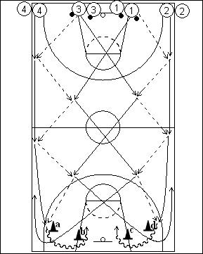

Catégorie : PASSES (Pas-004)
Déroulement
- Quatre files. Les joueurs des files 1 et 3 possèdent un ballon.
- Le premier joueur de la file 1 passe au premier de la file 2, tandis que le premier joueur de la file 3 passe au premier joueur de la file 4. 1 et 3 se croisent alors. 3 reçoit alors le ballon de 2 et lui remet. De même pour 1 qui reçoit et donne à 4. 1 et 3 se croisent à nouveau. 1 reçoit maintenant le ballon de 2 et lui remet. Idem pour 3 qui reçoit de 4 et lui rend le ballon.
- 1 contourne le cône a et se trouve cette fois le long d’une sideline. 2 contourne les cônes d et c et remonte dans le centre. 3 contourne le cône d et remonte le long de l’autre sideline. 4 contourne les cônes a et b et remonte dans le centre comme 2. Le même exercice est effectué au retour avec cette fois 1 et 3 sur l’aile et 2 et 4 dans le centre.
Coaching points
- Être surtout très attentif à la réalisation correcte des passes et au marcher possible (admettre un dribble quand nécessaire).